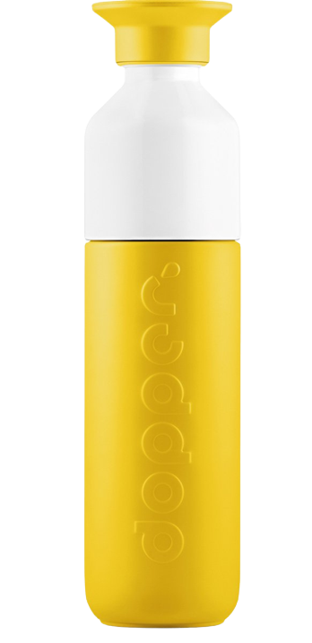

Dopper feitjes
-
40
flessen
Volgens onderzoek voorkomt één Dopperfles dat 40 plastic wegwerpflessen per jaar in onze oceaan belanden.
-
125
miljoen kg
Zoveel plastic wil Dopper uit onze oceaan weghouden.
-
30
blije vissen
We hebben 't niet onderzocht, maar denken graag dat 30 vissen een gat in de lucht springen als jij een herbruikbare waterfles kiest.
Grote dorst of een kleine tas?
Maak kennis met de Dopper Steel. De serieus sterke, lichte, herbruikbare, waterfles met hét perfecte formaat voor je volgende avontuur. Keuze uit 1,1 liter, 800 ml, 490 ml en 350 ml. Die volgende keer dat je geen herbruikbare waterfles kunt meenemen? Die komt er niet.
Wolkenkrabbers beklimmen, festivalhoppen, grote dorst of een kleine tas: er is altijd een ideale maat Dopper Steel waarmee jij plasticvervuiling kunt tegengaan.
Shop nuOnze producten
-

Bestrijd plasticvervuiling op avonturen groot of klein.
Shop Dopper Steel -
Op naar een jaar zonder plasticvervuiling.
Personaliseer je fles
Nieuw: laserstralen!!!
Dopper heeft nu een fles die laserstralen afvuurt! Dat ziet er pas cool uit.
Waarschuwing: Deze dopperfles heeft een hekel aan plasticflesjes.
Pssst, druk "L" op je toetsenbord.
News splash
Opzoek naar goed (lees: ocean-saving) nieuws?
Zie alle artikelen